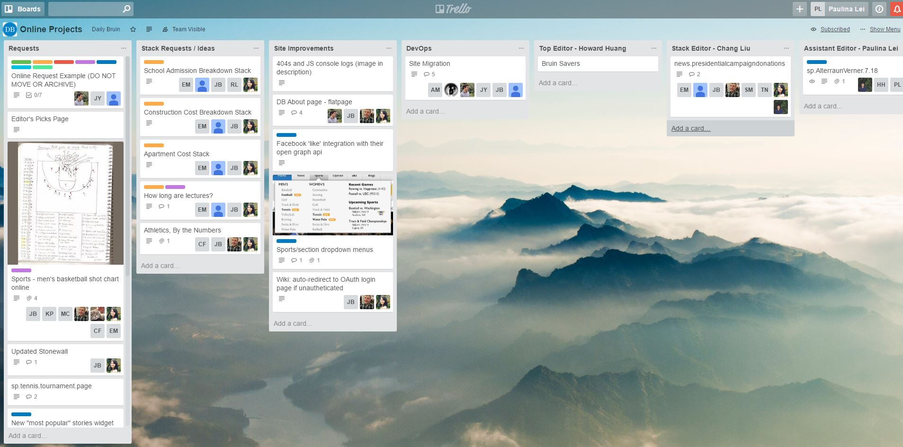
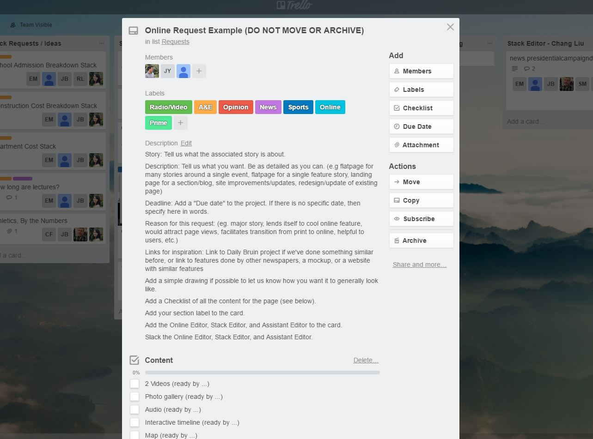
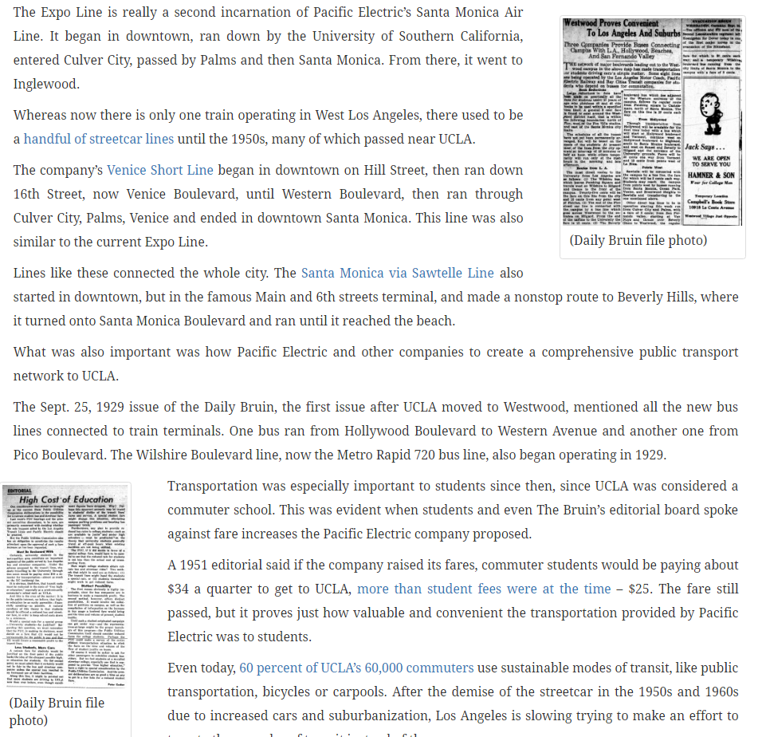

1. Slack
2. Email
3. Phone?
We make separate web pages for articles.
Here are some examples:
Orientation Issue 2016
1. Go to Online Projects Trello board. 
2. Make a request following the format. Be descriptive! 
3. Fill out the Google Sheets and talk to Design about how you want the flatpage to look.
4. Slack Howard, Paulina, and Chang.
1. Be as descriptive as possible maybe even uploading a picture to Trello.
2. We have a Google Sheets with Design, so please fill that out!
3. Be responsive to slack messages and work with the web developer.
4. Make the request at least a week ahead of time.
Stack is a data visualization blog.
Stack posts take much longer than flat pages.
1. Horizontal images are easier to work with when covering the page
2. Vertical images are better for imbeding into articles

3. Help us choose what the sharing previews look like
meta property="og:url" content="http://graphics.dailybruin.com/gradissue-2016/"
meta property="og:title" content="Daily Bruin | Graduation Issue 2016"
meta property="og:description" content="UCLA's award-winning college newspaper, the Daily Bruin, reviews the 2015-2016 school year."
meta property="og:image" content="http://dailybruin.com/images/2016/06/Grad-Issue-refer.png"
1. We try to make sites as responsive as possible, but if the site is not working on your device... pictures / specs help us out a lot when debugging.
2. Sorry if we are slow. We are working with a lot of legacy code.
3. We are planning on having more online people in office, stop by and say hi!
Questions?